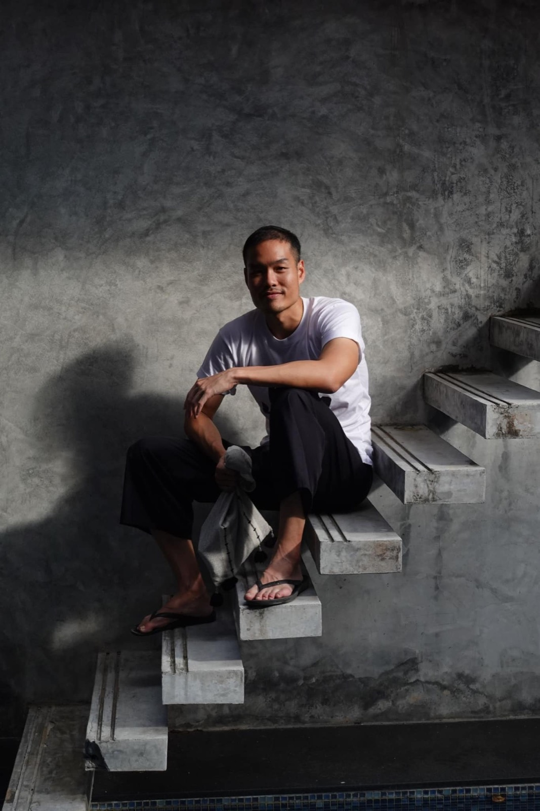

2023 · community · note
A family poem reflecting on 2022, a year of loss and resolve

Original text in Thai
ปี 2022 - #ดุดันไม่เกรงใจใคร (กู) 😵
ต้นปีอาก๊องออกไปเที่ยว ปลายปีปาป๊าก็ตามไป 🤍
อาม่าสัญญายังสู้ไหว ลูกหลานเหลนช่วยๆกัน 🥰
อามะทำการไม่ยอมหยุด เพื่อลูกสุข สนุกทุกๆ วัน 🔥
อาจี้ด่าจนได้ดี ไม่แพ้กัน สัญญาร่วมสร้าง จนวันตาย 🌈
ตาโอ๊กอินเลิฟ ตั่วโก๊สุดดีใจ 💕
ตาเอกยิ่งไปไกล ตะวันเมฆน่าเห็นดู 😇
ตาอ๊อดยังสู้ต่อ บ้านอาจ้อต้องรุ่งไม่มีถอย 💪
แม้นทุนจะมีน้อย แต่ไม่หวั่นเพื่อนช่วยกัน 😊
มูลนิธิ จี้สุดลิ่มทิ่มประตู แถวนี้รู้กว่าล้านบาทอาคารใหม่ ✨
เด็กๆ ยิ้ม คุณครูยิ้ม ดีต่อใจ สุขที่ไหนจะสู้สุขให้คน ❤️
ขอบคุณลูกค้า และญาติมิตร
ขอบคุณเพื่อนสนิท ไม่สนิทที่ช่วยเหลือ
ขอบคุณครอบครัว ที่จุนเจือ
เราบ้านอาจ้อได้ไปต่อ เพราะทุกคน ❤️
ปีใหม่นี้ขอพรชีวิตดี 😊
ให้สุขภาพดี เงินดี เพื่อนๆล้น 🎉
อุปสรรคใดๆ ขอเบา บรรเทาลง 🤍
สุดท้ายสุขจนล้นตลอดปี 🌈
สวัสดีปีใหม่ 2023 #กระต่ายหมายจันทร์ 💪🔥
#บ้านอาจ้อ 💕